RAGBRAI LII Guess the Route Prediction
RAGBRAI (Register's Annual Great Bicycle Ride Across Iowa) is a week-long cycling event that spans the state of Iowa from west to east, starting at the Missouri River (or the Big Sioux River if it starts north of Sioux City) and ending at the Mississippi River. Established in 1973, it is the oldest, largest, and longest recreational bicycle touring event in the world, drawing thousands of participants each year to experience Iowa's small towns, scenic landscapes, and local culture.
Each year, a contest is held to guess the route prior to the announcement party. Applicants submit their predictions for the eight overnight towns.
While we were biking across Iowa during RAGBRAI in 2024, a friend challenged me to use data science to predict the route for RAGBRAI LII in 2025. Challenge accepted.
Table of Contents
RAGBRAI LII Details
Honor Flight Network has been announced to be the Community Fund recipient for RAGBRAI LII. This might influence the route as Honor Flight has several hubs in Iowa:
- Fort Dodge
- Cedar Rapids
- Waterloo
- Davenport
- Dubuque
Davenport and Dubuque are past ending towns, but Davenport was visited just two years ago, in 2023, so it's unlikely to be revisited so soon. That leaves Dubuque as the prime candidate as the end town.
They have also released the logo, which may (or may not) hint at the route with the dotted line in the background.
Past Routes Analysis
A great way to predict the future is to understand the past decisions made by the route planning team. To do this, I scraped past route data from RAGBRAI's website.
RAGBRAI had its 50th anniversary in 2023, so many of the best towns to visit have already been chosen, especially the start and end towns. The race has also grown substantially over the years. In the last five RAGBRAI routes, only 12.5% of towns chosen had a population under 3k, so I used this as a lower bound for selecting host towns.
In the last 15 years, just two routes featured new starting towns that had not been visited before, and no new ending towns were chosen. The towns in the middle of the route vary a lot more than that start and end.
The plot below shows how different days of the route vary in terms of revisiting towns, and the number of unique towns visited for each day.
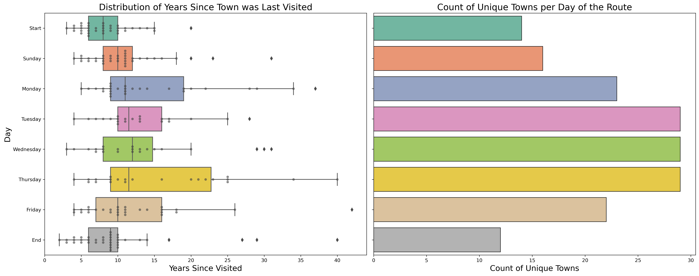Here are the towns that have started and ended the route in the past. The number after the name represents the number of times that town has been visited.
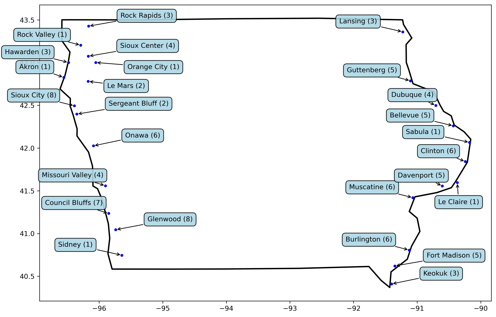Next, I looked at the distances traveled. I calculated the distance between towns using the haversine formula. An outlier here was in 2017, bikings went from Waukon to Lansing. The towns are only 14 miles apart, but the actual bike path they rode was 45 miles.
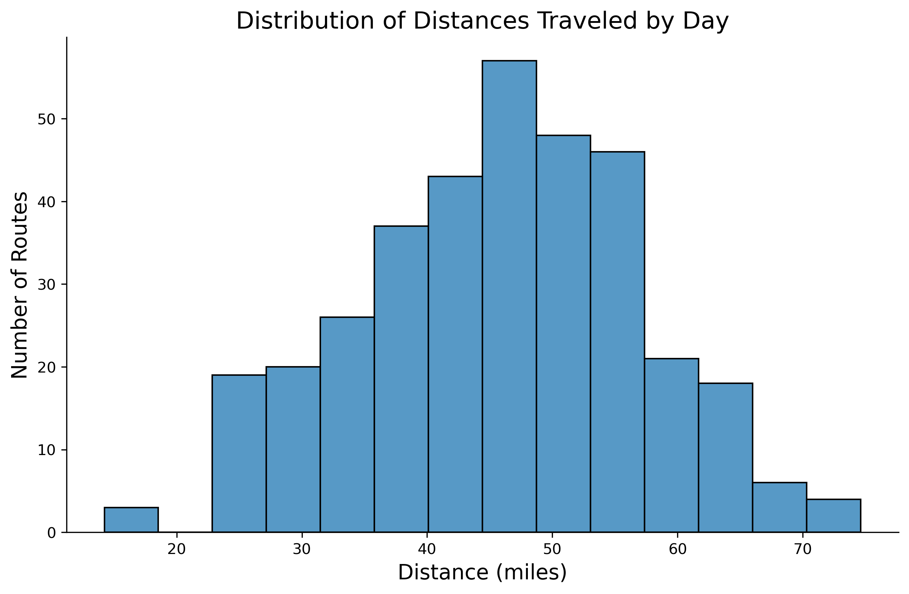Another way to analyze distance traveled is in terms of latitudes and longitudes. I used IQR ranges to limit the search for towns on a given route.
- \( \text{Low Threshold} = \text{Q}1 - 1.5 * \text{IQR} \)
- \( \text{High Threshold} = \text{Q}3 + 1.5 * \text{IQR} \)
For example, the longitude change was constrained between 0.087° westward and 1.594° eastward. Ames, with a longitude of -93.61°, can realistically connect to Marshalltown (-92.94°) under the defined range, but Cedar Rapids (-91.74°) falls outside these constraints.
My current approach treats latitude and longitude as independent, but a nice improvement would be to make them conditional. The further you go in one direction the more limited you should be in the other.
Here is what the histograms of latitude and longitude traveled look like with the IQR thresholds:
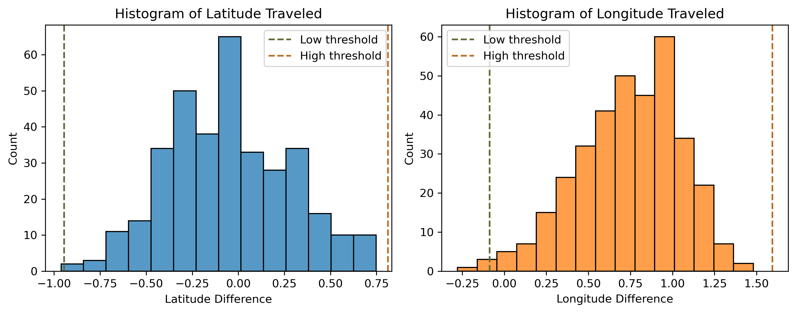Since Dubuque is the primarly end town candidate, I looked at past routes to there. Dubuque has been the ending town four times before. It's central location makes it accesible from nearly any starting point.
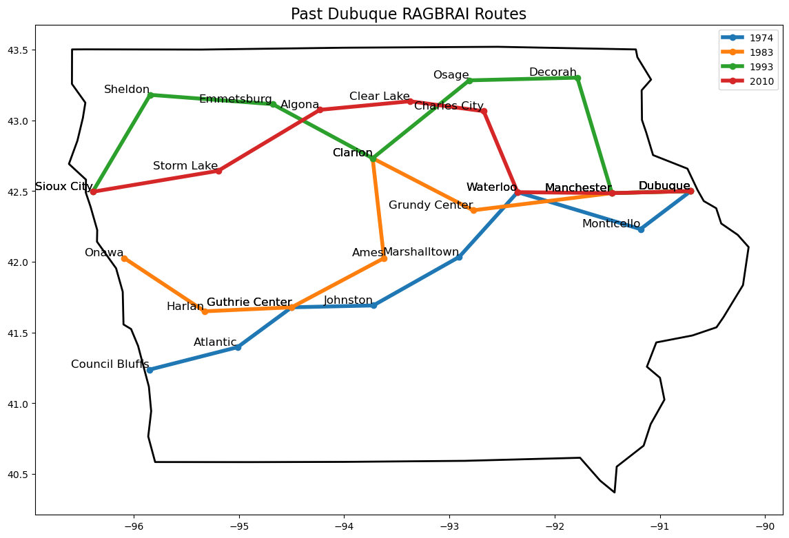Outlier Routes
While analyzing the data behind RAGBRAI routes, some routes naturally popped up as unique and warranted further investigation:
- RAGBRAI 1973: The first ride across Iowa, finishing on a Friday instead of Saturday which made the rides significantly longer each day. Given its unique schedule and mileage, this route was excluded from the analyses to keep consistency with newer routes.
- RAGBRAI 2019: Initially, I assumed that each day's route would move eastward, but the 2019 route proved this wasn't always the case. In 2019, RAGBRAI went to Burlington and then Keokuk, effectively backtracking 0.278° west.
- RAGBRAI 2022: The 2022 route included a significant 105-mile ride from Emmetsburg, as a tribute to RAGBRAI co-founder John Karras. This route also had riders backtrack from Pocahontas to Emmetsburg.
Finding Possible Routes
I used the past routes analysis to make requirements for finding possible routes. Here are the route constraints that I used to construct routes:
- Town population must be greater than 3k people.
- Longitude must be within the bounds of the historic minimum and maximums.
- Distance between towns must be between 15 and 80 miles.
- Longitude change must be between 0.087° westward and 1.594° eastward.
- Latitude change must be between 0.945° northward and 0.811° southward.
This resulted in hundreds of thousands of possible routes. Next, I needed a way to sort though these routes to find the most likely ones.
Scoring and Ranking Routes
To narrow down the list of possible routes, I created a scoring system that balances the frequency of a town's past visits with the time elapsed since its last inclusion. The logic is simple: towns frequently chosen as stops are more likely to appear again, and towns not visited for many years have a higher chance of reappearing. This system naturally excludes towns visited in the previous year (score of zero) and gives less importance towns that were rarely visited, even if they were visited long ago.
The likelihood of a town being chosen is defined by two factors:
- How many times has the town been visited in the past. This is raised to the power of 1.5 to give more weight to frequently visited towns.
- The number of years that have passed since the town was last visited.
This weighting ensures that both frequency and recency are accounted for in predicting its likelihood of being chosen.
The town score for a given day is calculated as:
Where \( \text{Visit Count} \) refers to the number of times a town has hosted an overnight stop, and \( \text{Years Since Last Visit}\) indicates how long it has been since the town was last part of the route.
The scatterplots below visualizes how towns are scored. The left plot shows how scores change with visit frequency and recency. The right plot visualizes how these scores play out look on real towns.
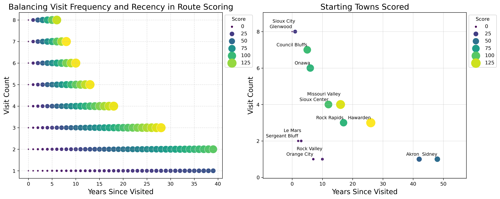The total route score, calculated as the sum of town scores across all seven days, helps prioritize routes that align with historical patterns while accommodating RAGBRAI's preference for variety.
By scoring and summing up towns in this way, I can rank potential routes based on their alignment with historical trends and likelihood of selection.
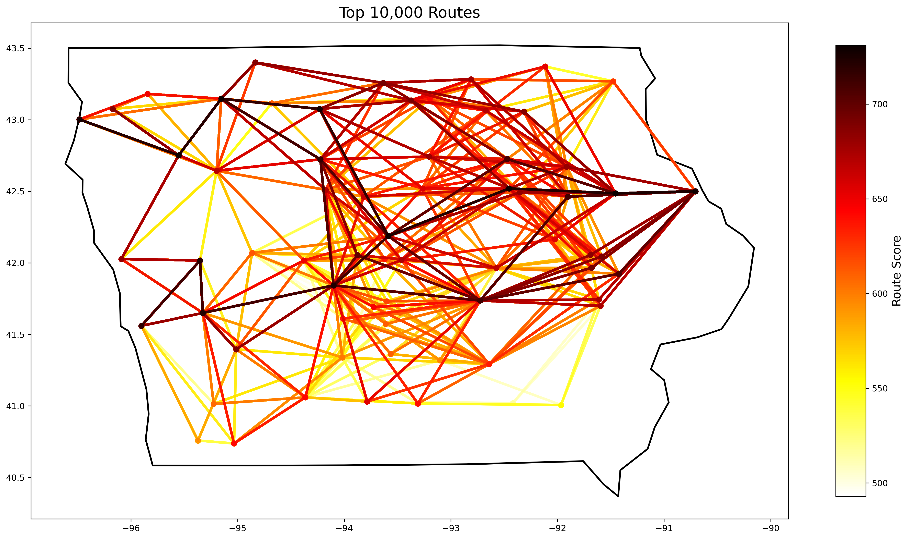Final Route Selection
Several of the top scored routes looked plausible to be chosen so picking just one
- Start:
- Sunday:
- Monday:
- Tuesday:
- Wednesday:
- Thursday: Waterloo
- Friday: Manchester
- End: Dubuque
Appendix
This section details some of the work that went into earlier versions of the project, but didn't get used in the final product.
Graph Approach
A more robust method of finding routes would involve the use of graph theory similar to how Google Maps helps you get from point A to B.
I downloaded graph data from OpenStreetMap using OSMnx. A graph is composed of nodes and Edges. Nodes are points on the map such as towns or road intersections. Edges are the connections between nodes, representing the road segments. Each edge contains additional metadata, such as road type, and length.
Here is an example graph where nodes are colored orange and edges are the white roads:
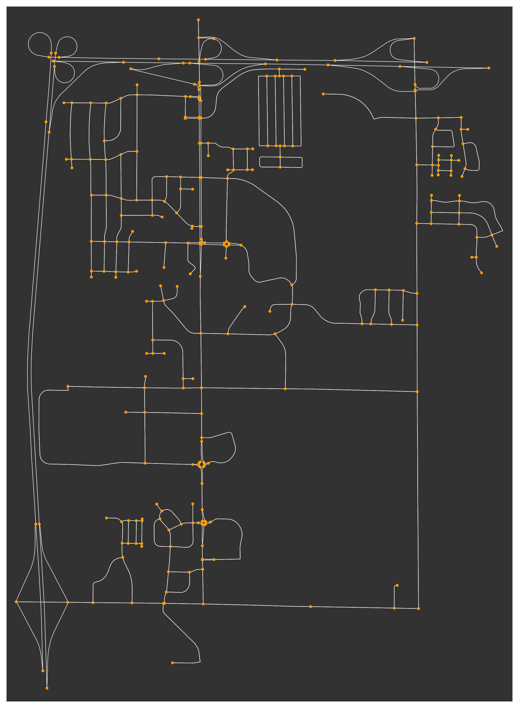Custom Path Weights
Not all roads are equal when planning a RAGBRAI route. To account for this, I added custom weights to the edges in my graph.
Roads are classified by their highway type, and I assigned the following penalties to discourage paths on busier roads:
| Highway Type | Penalty |
|---|---|
| primary | 20x |
| trunk | 15x |
| motorway | 12x |
| primary_link | 10x |
| trunk_link | 10x |
| motorway_link | 10x |
Paths Between Towns
Finding the path between towns on a graph is a computationally expensive task. To reduce the number of possible paths to calculate, I first narrowed down the list of towns based on the constraints mentioned in the main project. After the list of towns was narrowed down, I used the graph path as a second check for valid towns.
For example starting in Sioux Center, the first round of filtering returns about 20 candidate towns. Then after calculating a path from Sioux Center to each candidate town we can perform another round of filtering to see if the path is between typical route distances (~35-85 miles). The map below shows this two stage filtering, where the orange lines are only valid in the first round, and the green lines are valid for both filters.
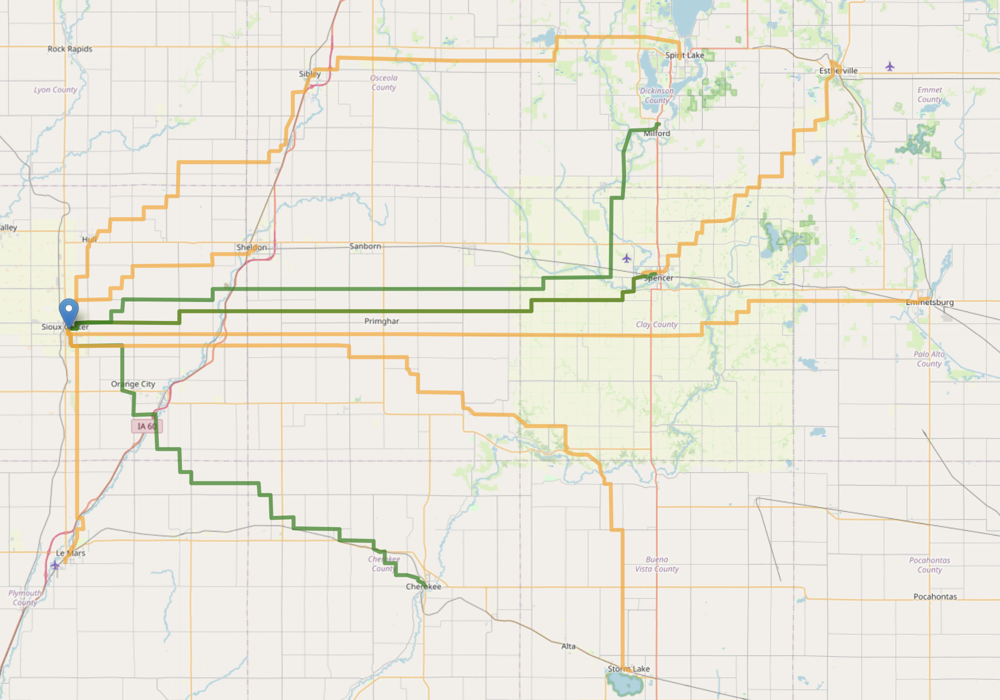Computational Challenges and Pivot
I kicked off the program and let it run overnight to find all possible routes with the starting point of Sioux Center. After a full day of running, I only had routes for the first few days. The issue was a combinatorial explosion in possible routes.
After a several iterations of code optimization, it was still taking way too long to run. I estimated it would take over a year to finish at this rate. So I pivoted and scratched this part of the project. Maybe next year!
Route Clustering
Clustering is a useful tool for data analysis. I explored clustering routes based on their latitude and longitude to compare routes based on their distance from eachother. The dendogram shows how similar different routes are to eachother. Patterns appear such as nearby years being far away from eachother and the closest routes can be found.
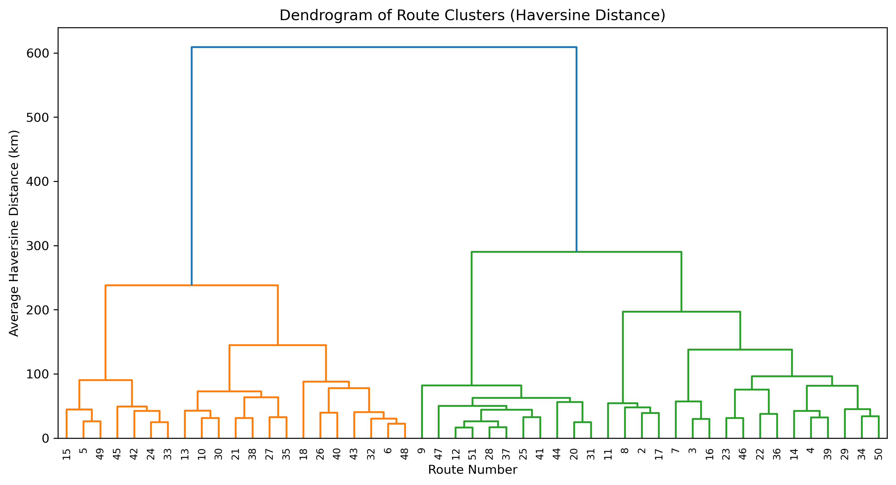Routes 12 and 51 have the lowest average haversine distance as found by the dendogram. On a map, it's clear to see why as they visited several of the same towns.
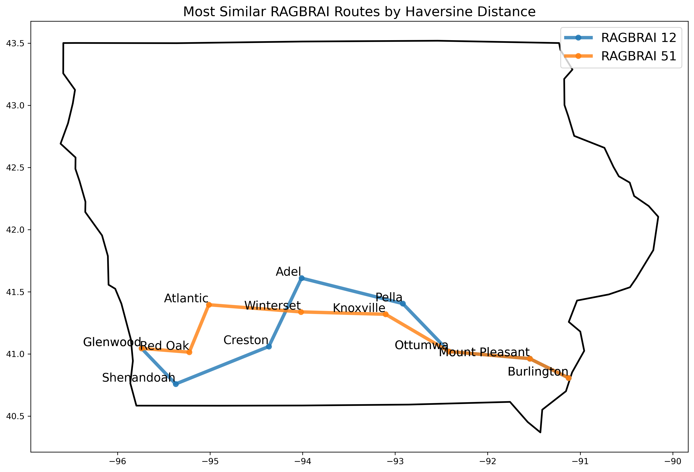I also tried a few different clustering groups to find patterns in the years, but I found a lot of variation. I still thought it was interesting to see the natural seperation of northern and southern routes.
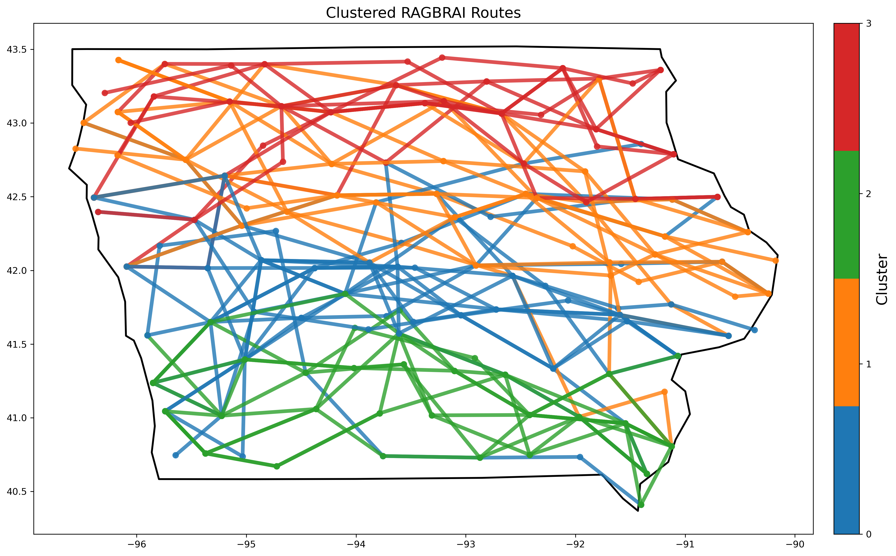Data and Tools
Huge thank you to the following resource providers for making this project possible:
- Natural Earth has boundary files for Iowa available to download for free.
- OSMnx
offers a great interface for pulling map data from OpenStreetMap.
One line of code was all it takes to get the roads and cities in Iowa:
G = ox.graph_from_place("Iowa", network_type="drive") - The Python package wptools made pulling wikipedia information automatically. I pulled the population information and county for each town in the dataset.
My code repository can be found on GitHub.